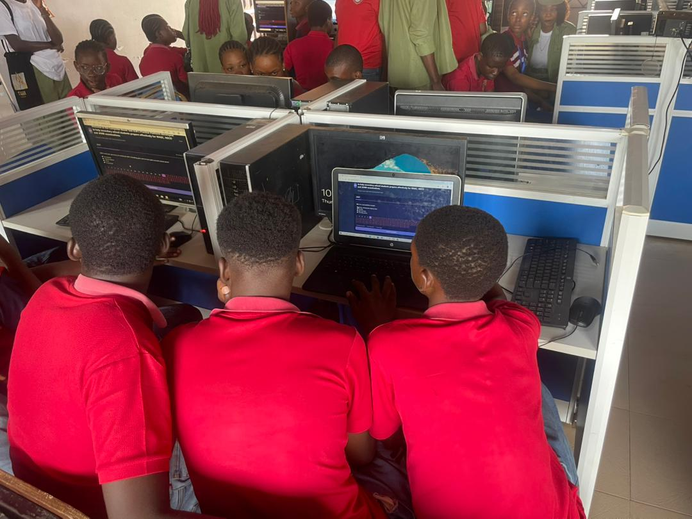

CBT
Welcome to the Computer-Based Test (CBT) Practice Platform developed to help secondary school students prepare effectively for WAEC, NECO and JAMB examinations.
Sharpen exam skills with timed practice tests
Developed as an NYSC Community Development Project by Corp Member ADIYU N.A (ED/25C/0585)
About Us Contact Us.png)

Computer-Based Test (CBT) Practice Platform for WAEC, NECO & JAMB Candidates
The NYSC SDG 4 – Quality Education CBT Practice Platform is a Community Development Service (CDS) initiative developed in alignment with the United Nations Sustainable Development Goal 4 (SDG 4), which seeks to ensure inclusive and equitable quality education and promote lifelong learning opportunities for all.
This digital examination platform was designed and implemented by Corp Member ADIYU NIYI ABEEB (ED/25C/0585) as part of his commitment to educational advancement during the National Youth Service Corps (NYSC) programme.
The project provides secondary school students with access to a structured Computer-Based Test (CBT) environment that simulates real examination conditions. Through this platform, students can practice examination-style questions and improve their preparedness for national examinations such as WAEC, NECO, and JAMB.
This platform represents a practical contribution toward strengthening educational outcomes and advancing sustainable development through technology-driven solutions. Developed with dedication and a strong sense of community service, this initiative reflects a commitment to empowering learners and supporting the broader goal of quality education for all.
As part of the NYSC Community Development Service (CDS) initiative under SDG 4 – Quality Education, this CBT Practice Platform has been introduced to several secondary schools to help students gain practical experience with computer-based examinations.

Students receiving CBT training during the SDG 4 outreach program.

Demonstration of the CBT platform to students and teachers.
Students practicing CBT examination using the platform.
Students practicing CBT examination using the platform.

Students receiving CBT training during the SDG 4 outreach program.

Demonstration of the CBT platform to students and teachers.
Students practicing CBT examination using the platform.

Demonstration of the CBT platform to students and teachers.
Students practicing CBT examination using the platform.